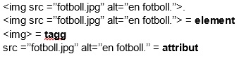

På denna webbsida kommer tre frågor om webbteknik med respektive delfrågor att besvaras.
F2: HTML
Beskriv vad element, tagg och attribut är.
Ett element är allt innehåll som finns mellan två taggar. En tagg representerar start och slut för ett element. Vilken tagg som används är viktigt för innehållet i elementet, om man exempelvis anger en img-tagg förväntas elementet bestå av en bild. Ett attribut används inom starttaggen för att påverka hur elementet ser ut. Se exempel.

Vad är en entitet?
Inom HTML finns det vissa tecken som är kopplade till olika kommandon som därför inte går att skriva fritt i en text utan att det tolkas fel. Ett bra exempel på detta är < och > som vanligtvis används för att skriva taggar, trots detta finns det lägen då man vill skriva dessa tecken i exempelvis en textruta och då behöver man kunna skriva dem. Detta gör man via en så kallad entitet. En entitet börjar alltid med & och efterföljs sedan av bestämda siffror eller bokstäver som sedan blir ett visst tecken om de skrivs i en viss ordning. En entitet avslutas sedan alltid med ;. Ett <-tecken skrivs exempelvis som & följt av lt;.
Vad är skillnaden mellan ett block-element och ett inline-element?
Ett block-element börjar alltid på en ny rad och webbläsaren lägger automatiskt till mellanrum både innan och efter elementet. Ett vanligt exempel på ett block-element är <p></p> som används för att skriva paragrafer. Inom ett block-element kan man sedan lägga till ett inline-element. Det kan exempelvis vara för att stilsätta något innehåll i block-elementet. Här kommer ett exempel.